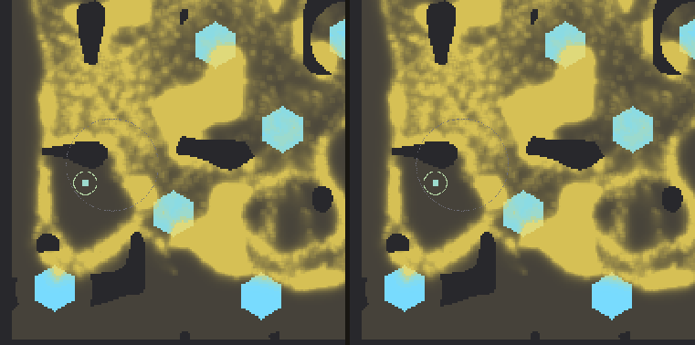
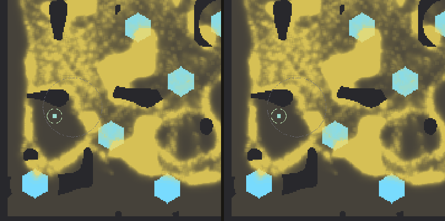

<title>Provoke and Still</title>
<meta name="claude:viewport-fit-sides" content="cover">
<link rel="stylesheet" href="https://fonts.googleapis.com/css2?family=Inter:wght@400;600&family=Space+Grotesk:wght@500;700&display=swap">
<style>
:root { --bg:#f6f3ec; --fg:#1d1b17; --muted:#6b655a; --card:#fffdf8; --line:#e2dccf; --accent:#c4520f; }
@media (prefers-color-scheme: dark) { :root:not([data-theme="light"]) { --bg:#16140f; --fg:#ece6d8; --muted:#a39b8a; --card:#201d16; --line:#37322a; --accent:#f08a47; color-scheme:dark } }
:root[data-theme="dark"] { --bg:#16140f; --fg:#ece6d8; --muted:#a39b8a; --card:#201d16; --line:#37322a; --accent:#f08a47; color-scheme:dark }
body { background:var(--bg); color:var(--fg); font:15px/1.55 Inter, system-ui, sans-serif; padding-left:max(16px, env(safe-area-inset-left, 0px)); padding-right:max(16px, env(safe-area-inset-right, 0px)); padding-block:24px 48px }
main { max-width:1100px; margin:0 auto }
h1, h2 { font-family:"Space Grotesk", Inter, sans-serif; text-wrap:balance; line-height:1.2 }
h1 { font-size:1.9rem; margin:0 0 .3rem }
h2 { font-size:1.25rem; margin:2rem 0 .5rem }
p, ul { max-width:72ch }
.sub { color:var(--muted); margin:0 0 1.2rem }
figure { margin:1rem 0; background:var(--card); border:1px solid var(--line); border-radius:10px; padding:10px }
figure img { display:block; width:100%; border-radius:6px }
.labels { display:grid; grid-template-columns:repeat(2, 1fr); gap:10px; font-size:.85rem; margin-top:.5rem }
.labels b { display:block; font-family:"Space Grotesk", Inter, sans-serif; font-size:1rem }
.labels span { color:var(--muted) }
figcaption { color:var(--muted); font-size:.9rem; margin-top:.6rem }
.wrap { overflow-x:auto }
table { border-collapse:collapse; font-size:.9rem; min-width:640px; width:100% }
th, td { text-align:right; padding:6px 9px; border-bottom:1px solid var(--line); font-variant-numeric:tabular-nums }
th:first-child, td:first-child { text-align:left }
th { font-weight:600; color:var(--muted) }
b.k { color:var(--accent) }
.key { display:flex; flex-wrap:wrap; gap:14px; font-size:.85rem; color:var(--muted); margin:.4rem 0 0 }
.key i { display:inline-block; width:12px; height:12px; border-radius:3px; vertical-align:-1px; margin-right:5px }
</style>
<main>
<h1>Provoke and Still</h1>
<p class="sub">Simulation-use plan steps B1 and B2, 2026-11-17. Two new statuses the slime's walkers can carry, on both engines, and two test devices on the tools page (E, then X and Z; left out of runs until the gun thread makes their cards). Provoke makes the slime deaf to its food news, so it believes it is cut off and charges. Still stops its charges and its eating. CPU probe, the default slime (shape C) on the race world, a standing soldier 8 cells clear of the slime, a disc of 12 cells. One frame every third of a game second, 15 s.</p>
<div class="key"><span><i style="background:#f0d75a"></i>slime (by its trail)</span><span><i style="background:#968c8c"></i>walkers that believe they are cut off</span><span><i style="background:#78dcff"></i>crystal</span><span><i style="background:#fff"></i>the soldier (white square, grey ring: 3 cells)</span></div>

<h2>Provoke: the slime charges</h2>
<figure>

<div class="labels">
<div><b>Plain</b><span>0 walkers reached the soldier</span></div>
<div><b>Provoked</b><span>136 reached it (124 from the disc); 88 of 783 died on the way</span></div>
</div>
<figcaption>Seed 1. The disc goes deaf at 0 s. At 5 s its food news is older than the wither lag, so it greys; after the 1.5 s lean it runs for the soldier, the panic it already has when cut off for real.</figcaption>
</figure>

<h2>Still: a surge, with its front held</h2>
<figure>

<div class="labels">
<div><b>Plain surge</b><span>149 reached the soldier, 69 of them from the disc</span></div>
<div><b>Disc still</b><span>130 reached it, none from the disc</span></div>
</div>
<figcaption>Seed 1. A surge starts 1 s in; the still disc is the 12 cells of slime nearest the soldier. It stops charging, but the slime behind it, still in the surge's reach, comes round it.</figcaption>
</figure>

<h2>Eight seeds</h2>
<p>Walkers that came within 3 cells of the soldier in 15 s, each counted once.</p>
<div class="wrap"><table>
<tr><th>Seed</th><th>Plain</th><th>Provoked</th><th>Surge</th><th>Surge, disc still</th></tr>
<tr><td>1</td><td>0</td><td><b class="k">136</b></td><td>149</td><td><b class="k">130</b></td></tr>
<tr><td>2</td><td>0</td><td><b class="k">183</b></td><td>255</td><td><b class="k">248</b></td></tr>
<tr><td>3</td><td>0</td><td><b class="k">147</b></td><td>226</td><td><b class="k">184</b></td></tr>
<tr><td>4</td><td>0</td><td><b class="k">142</b></td><td>175</td><td><b class="k">147</b></td></tr>
<tr><td>5</td><td>0</td><td><b class="k">145</b></td><td>253</td><td><b class="k">232</b></td></tr>
<tr><td>6</td><td>0</td><td><b class="k">106</b></td><td>96</td><td><b class="k">91</b></td></tr>
<tr><td>7</td><td>0</td><td><b class="k">151</b></td><td>261</td><td><b class="k">257</b></td></tr>
<tr><td>8</td><td>0</td><td><b class="k">137</b></td><td>177</td><td><b class="k">144</b></td></tr>
</table></div>
<ul>
<li>Provoke brings a charge where there was none: 8 of 8 seeds.</li>
<li>Still holds the disc it hits (0-21 of its walkers reached the soldier, against 36-123), but the surge as a whole drops only 10%, 8 of 8 seeds.</li>
<li>Still's cost barely shows in 30 s: a still part on a crystal lost no walkers on 8 of 8 seeds (shape C lives minutes on what it holds, food flows through the body, and its children are born without the status). Held still as a whole body, the slime grew 12% less (8 of 8).</li>
</ul>

<h2>Try it</h2>
<p>Double-click <code>play.cmd</code>, start a free game (not a run), select a squad and press E for the tools page: Provoke is X, Still is Z. Both cost 100 food; reach, length and price are first guesses.</p>
</main>
